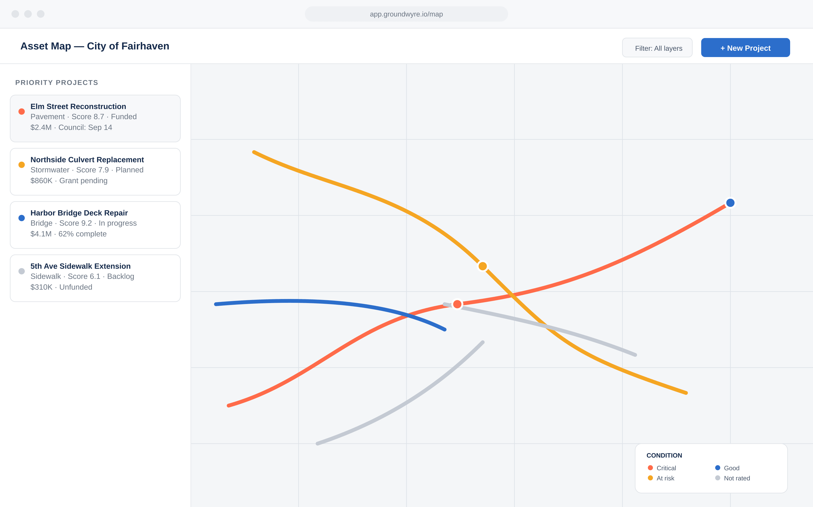
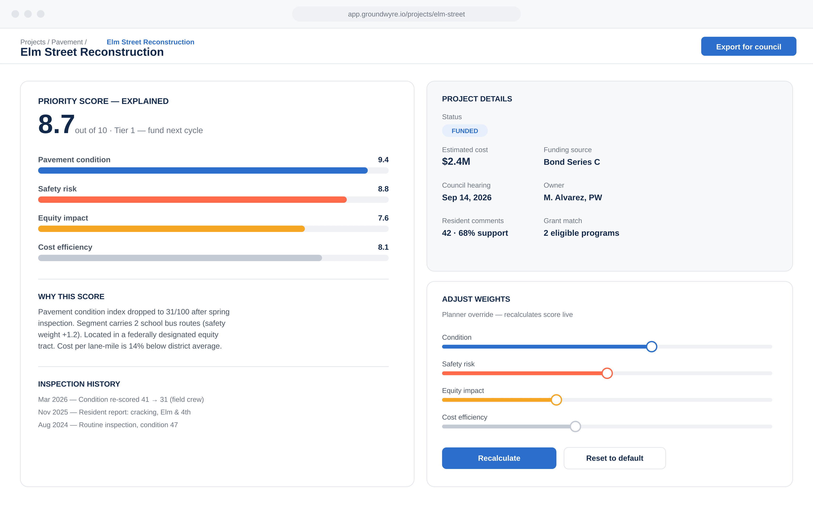
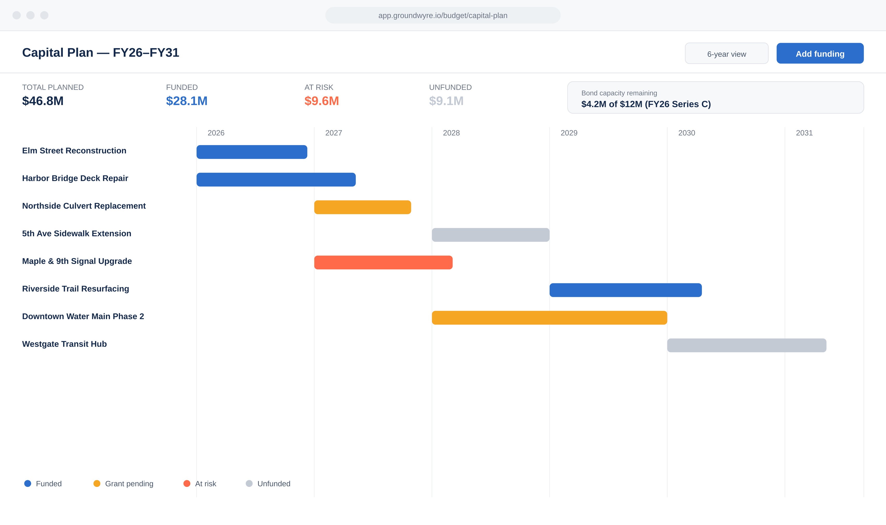
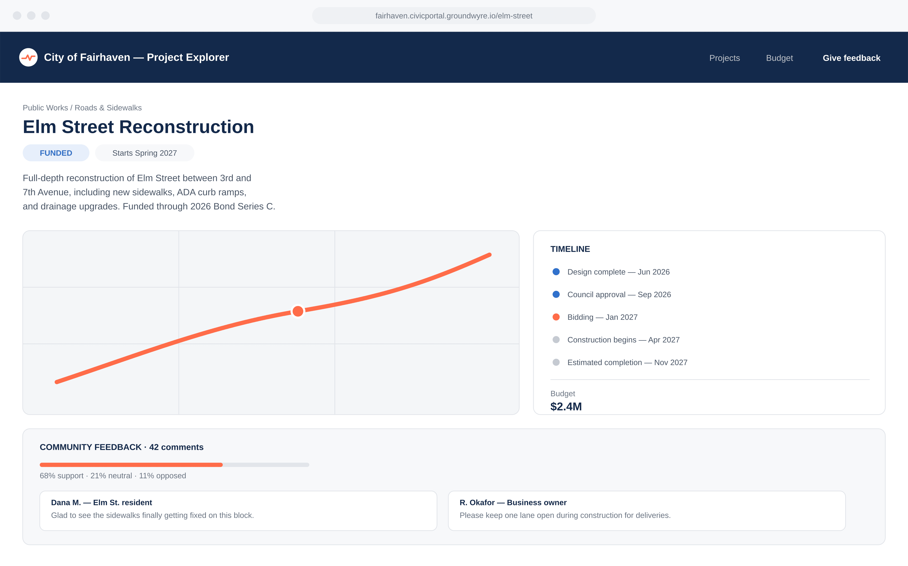
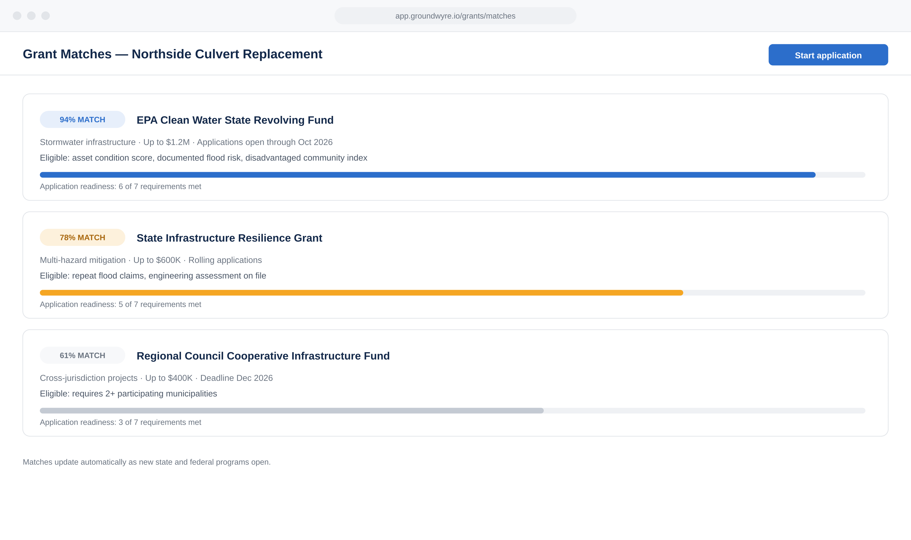
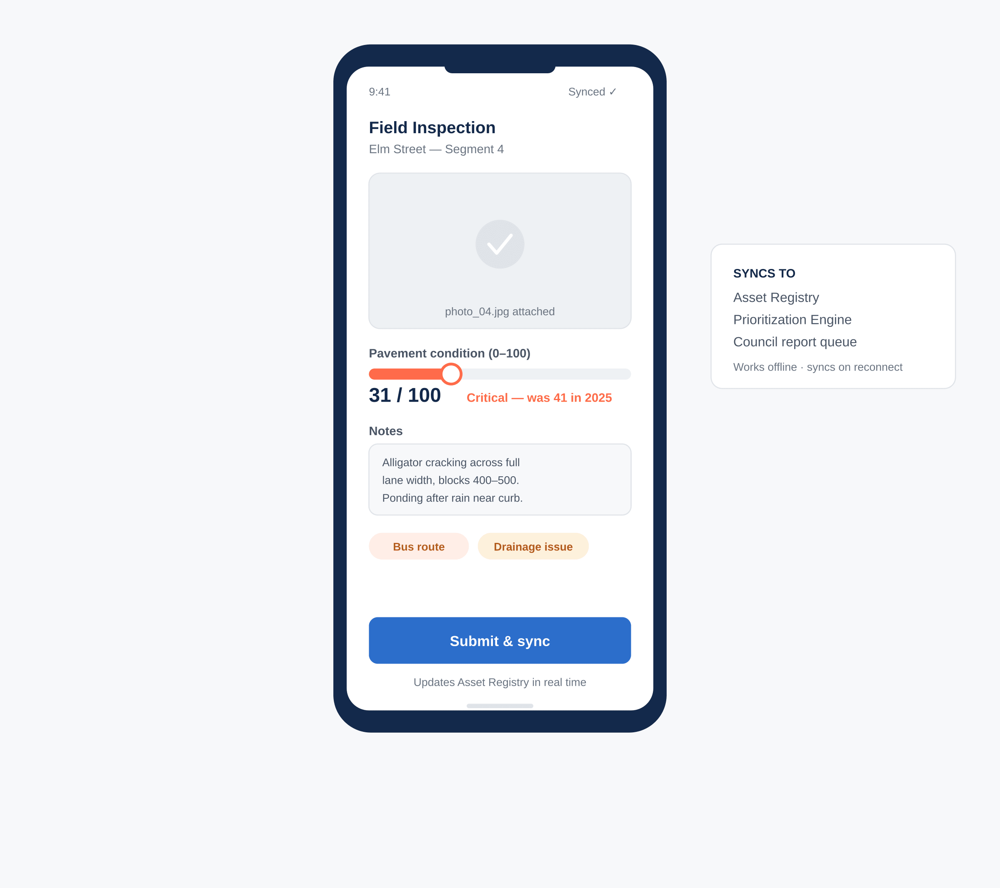

Every asset, one record
A unified, GIS-linked inventory of every physical infrastructure asset a city manages — roads, bridges, water lines, sidewalks, signals, and facilities — with condition scores, inspection history, and lifecycle data attached to each record. This is the factual foundation everything else in Groundwyre builds on.
- Syncs with your existing GIS layers — Esri, QGIS, or flat shapefiles
- Condition scoring on a consistent 0–100 index across asset types
- Full inspection and maintenance history on every record

Ranked, and fully explainable
An AI-assisted scoring system that ranks competing infrastructure needs based on condition, risk, cost, and equity impact, with every score fully explainable and adjustable by planning staff. Built to turn "what should we fix first" from a debate into a documented, defensible process.
- Every score shows its underlying factors — never a black box
- Planners can adjust weights and see the score recalculate live
- Full override history retained for audit and public records requests

A funded schedule, not a wish list
A multi-year budgeting module that ties prioritized projects directly to available funding sources, grants, and bond capacity — so a plan isn't just a wish list, it's a funded schedule with visible trade-offs when money runs short.
- Six-year capital plan view with funding source breakdown
- Real-time bond capacity and reserve tracking
- Scenario planning — see the plan shift when funding changes

Public input, structured like data
A public-facing portal where residents can view planned and active projects, leave feedback, and follow progress, with all input automatically structured and mapped back to the relevant project record for planning teams.
- Branded public project pages generated automatically per project
- Comment sentiment and themes summarized without manual tagging
- No account required for residents to view or comment

The presentation builds itself
One-click generation of council-ready presentations, public project pages, and plain-language project summaries — pulling directly from live project data instead of requiring staff to rebuild slides manually every cycle.
- Export a council packet in your city's format in under a minute
- Plain-language summaries generated automatically from technical data
- Presentation stays current — no more slides three weeks out of date

Know what you qualify for before you apply
A module that matches active infrastructure needs against available federal, state, and regional grant programs, and helps assemble the data-backed narrative those applications require.
- Live matching against federal, state, and regional programs
- Application readiness score per project, per program
- Auto-populated narrative sections pulled from project data

What the crew sees, the office sees
A mobile companion for field staff to log inspections, update asset conditions, and capture photos on-site, feeding directly back into the Asset Registry and Prioritization Engine in real time.
- Works offline in the field, syncs automatically on reconnect
- Photo and note capture attached directly to the asset record
- Updates flow into prioritization scores the same day

See how your program compares
Cross-department and opt-in cross-city benchmarking on metrics like average pavement condition, project delivery time, and capital spend per capita — giving city leadership context for how their infrastructure program compares to peers.
- Opt-in peer benchmarking against similarly sized cities
- Department-level dashboards for leadership reporting
- Exportable trendlines for annual infrastructure reports